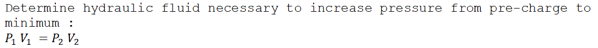
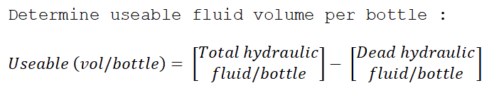
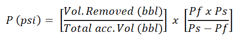

Barrels of slug required for a desired length of dry pipe
Step 1 :
Hydrostatic pressure required to give desired drop inside drill pipe :
Step 2 :
Difference in pressure gradient between slug weight and mud weight :
Step 3 :
Length of slug in drill pipe :
Step 4 :
Volume of slug, barrels :
Case : Determine the barrels of slug required for the following :
Desired length of dry pipe (2 stands) = ft
Mud weight = ppg
slug weight = ppg
Drill pipe capacity = bbl/ft
Step 1 :
Hydrostatic pressure required :
Step 2 :
Difference in pressure gradient (psi/ft):
Step 3 :
Length of slug in drill pipe (ft) :
Step 4 :
Volume of slug (bbl) :
Weight of slug required for a desired length of dry pipe with a set volume of slug
Step 1 :
Length of slug in drill pipe (ft):
Step 2 :
Hydrostatic pressure required to give desired drop inside drill pipe :
Step 3 :
Weight of slug (ppg):
Volume, height, and pressure gained because of slug :
Case :
Desired length of dry pipe (2 stands) = ft
Mud weight = ppg
Volume of slug = bbl
Drill pipe capacity = bbl/ft
Step 1 :
Length of slug in drill pipe (ft):
Step 2 :
Hydrostatic pressure required :
Step 3 :
Weight of slug (ppg):
Volume, height, and pressure gained because of slug :
Volume gained in mud pits after slug is pumped, due to U-tubing :
Height (ft) that the slug would occupy in annulus :
Hydrostatic pressure gained in annulus because of slug : :
Case :
Desired length of dry pipe (2 stands) = ft
Slug volume = bbl
Slug weight = ppg
Mud weight = ppg
Drill pipe capacity = bbl/ft
Annulus volume (8-1/2 inch by 4-1/2 inch) = ft/bbl
Volume gained in mud pits after slug is pumped, due to U-tubing :
Height (ft) that the slug would occupy in annulus :
Hydrostatic pressure gained in annulus because of slug : :
Accumulator Capacity — Useable Volume Per Bottle
Step 1 :

Step 2 :
Step 3 :
Case :
Volume per bottle = gal
Pre-charge pressure = psi
Minimum pressure remaining after activation = psi
Pressure gradient of hydraulic fluid = psi/ft
Maximum pressure = psi
Boyle’s Law for ideal gases will be adjusted and used as follows :
Step 1 :
Step 2 :
Step 3 :
Subsea Applications
In subsea applications the hydrostatic pressure exerted by the hydraulic fluid must be compensated for in the calculations :
Step 1 :
Pre-charge pressure : Minimum pressure :
Maximum pressure :
Step 2 :

Step 3 :
Step 4 :

Case :
Water depth = ft
Hydrostatic pressure of hydraulic fluid = psi
Step 1 :
Pre-charge pressure :
Minimum pressure :
Maximum pressure :
Step 2 :
Step 3 :
Step 4 :
Accumulator Pre-charge Pressure
The following is a method of measuring the average accumulator pre-charge pressure by operating the unit with the charge pumps switched off :

Where ;
P = avenge pro-charge pressure (psi)
Pf = final accumulator pressure (psi)
Ps = starting accumulator pressure (psi)
Case :
Starting accumulator pressure (Ps) = psi
Final accumulator pressure (Pf) = psi
Volume of fluid removed = gal
Total accumulator volume = gal